What is the Bareiss-Montante method?
The Bareiss-Montante method is an elimination method used to solve systems of linear equations through an augmented matrix. Its objective is similar to Gauss-Jordan reduction: to transform the matrix into a form where the solution can be read clearly.
One advantage of this method is that it usually preserves integer values during the process, which makes the calculations cleaner. The method advances through a fixed number of stages based on the number of rows in the matrix.
Main formula
At each stage, the method uses the current pivot and the previous pivot to calculate the new values of the matrix.
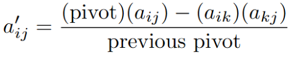
In the first stage, the previous pivot is equal to 1. After that, the previous pivot becomes the pivot from the stage before.
Augmented matrix
A system with n variables can be represented using an augmented matrix with n rows and n + 1 columns. The last column contains the constants from the right side of the equations.
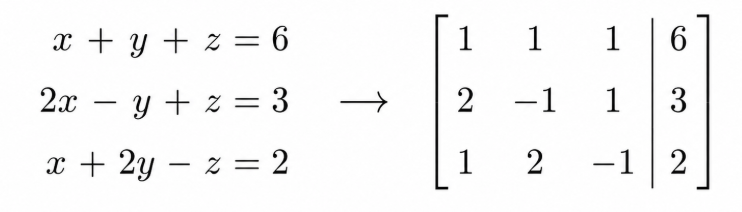
Step-by-step procedure
- Select the pivot from the main diagonal. The pivot must be different from zero.
- Keep the pivot row unchanged.
- Turn the other values in the pivot column into zero.
- Calculate the rest of the new matrix using the Bareiss-Montante formula.
- Repeat the process with the next pivot.
- At the end, divide each row by its diagonal value to obtain the identity matrix.
Example
Using the same augmented matrix, the first step is to copy the pivot row and place zeros in the pivot column, except in the pivot position.
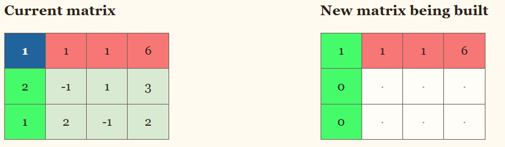
Since this is the first stage, the previous pivot is 1. For example:
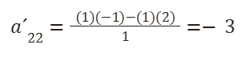
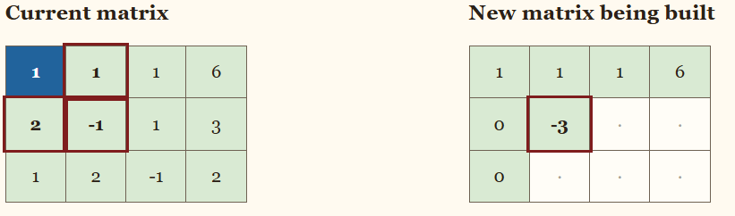
The same formula is used for the next position:
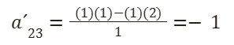
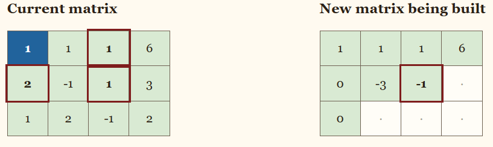
The process continues by changing the row and column values according to the position being calculated.
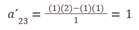
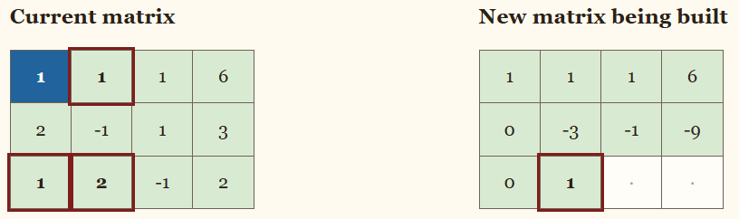
After completing all the required positions, the first stage is finished.
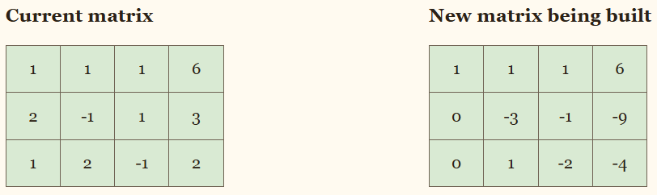
Second stage
The second stage uses the matrix obtained from the previous step. The next pivot is selected from the main diagonal.
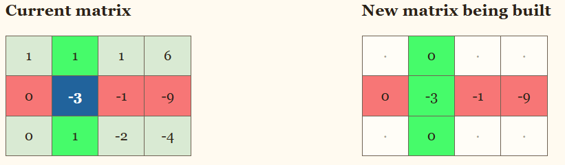
Now the pivot is the second diagonal value, and the previous pivot is the pivot from the first stage.
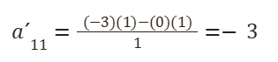
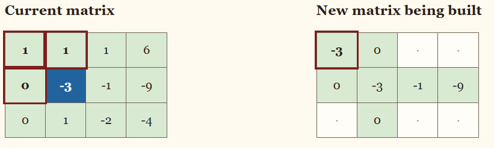
The same formula is repeated for the other positions that are not in the pivot row or pivot column.
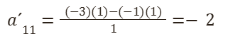
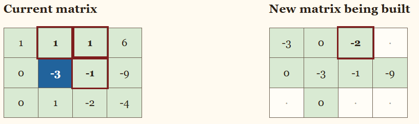
After repeating the process through the matrix, the second stage is completed.
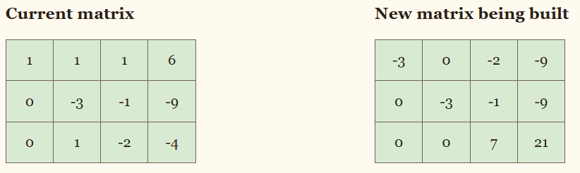
Third stage
The method continues with the next pivot. In this stage, the previous pivot is no longer 1, so the denominator in the formula changes.
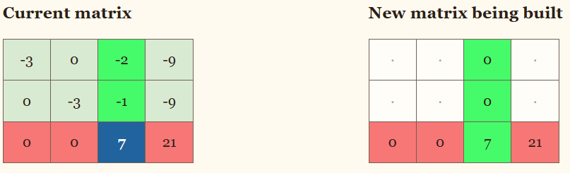
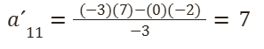
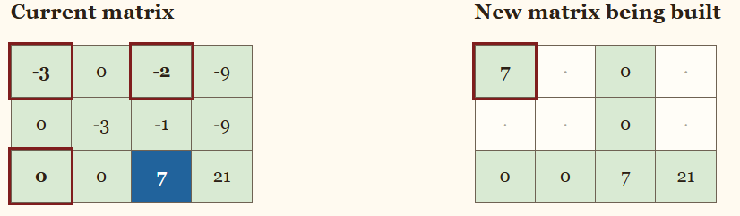
The same process is repeated until every required value in the new matrix has been calculated.
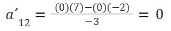
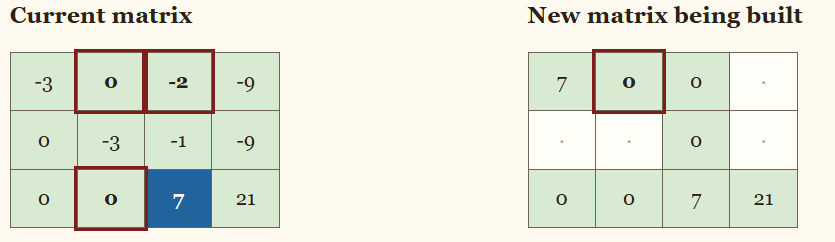
At the end of the Bareiss-Montante process, a diagonal matrix is obtained.
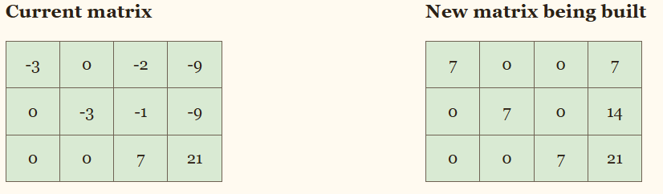
Final normalization
Finally, each row is divided by its diagonal value. This turns the coefficient matrix into the identity matrix and allows the solution to be read directly from the last column.
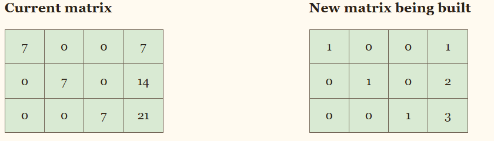
Special cases
Infinitely many solutions
If a complete zero row appears, it means that at least one equation depends on the others. In this case, the system has free variables and therefore has infinitely many solutions.
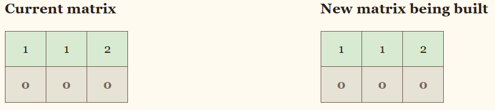
No solution
If the coefficients in a row are all zero but the augmented value is not zero, the system contains a contradiction. The left side is always zero, so it cannot be equal to a nonzero number.
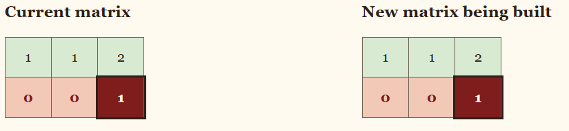